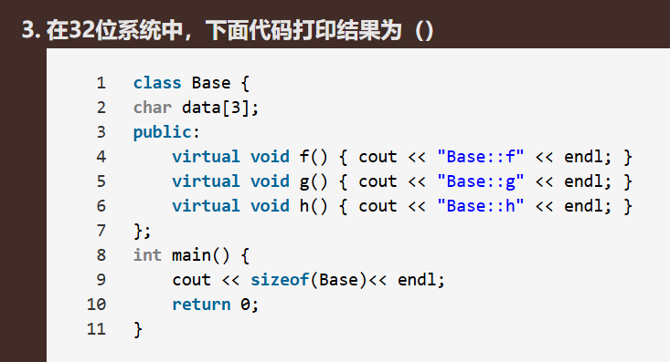
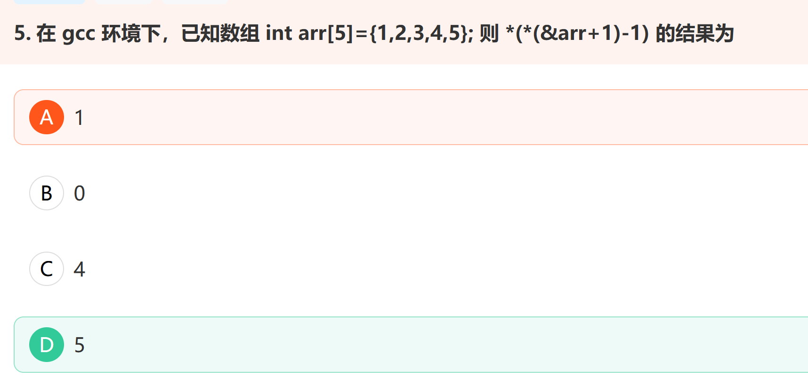
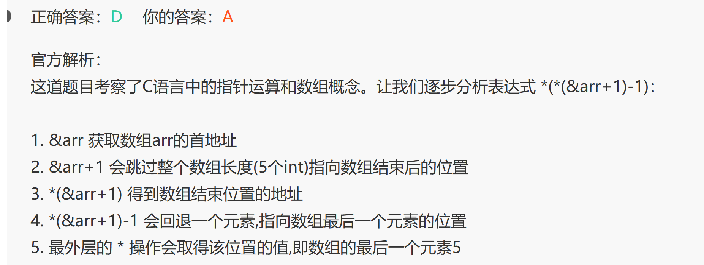

全局静态变量、函数内静态变量、attribute((destructor))析构顺序
构造析构顺序的不确定性
以及静态函数获取的单例。
C++ 标准规定：同一个编译单元（同一个 cpp 文件）内，静态/全局对象的析构顺序与构造顺序相反。
但不同编译单元（不同 cpp 文件/so）之间的析构顺序是未定义的。
局部 static（即函数内 static）对象的析构顺序与其定义顺序有关，但也只在同一编译单元内有保证。
若一个变量仅在单个文件中可见，则建议将这个变量声明为静态全局变量，static修饰的静态全局变量仅在当前文件中可见。
如果一个全局变量只被单个函数使用,将其改为该函数的静态局部变量可以进一步限制变量的作用域,提高代码的内聚性,降低耦合度。静态局部变量具有全局寿命但局部作用域的特点,
静态全局变量是存储在**静态数据区的,**而不是栈区,因此静态全局变量的大小不会导致栈溢出。栈溢出通常是由于函数调用层次过深或局部变量过大导致的。
类的内存占用

1.32位系统中虚函数指针为4字节，64位为8字节
2.只需要考虑虚函数指针，虚函数表不计入某个类的资源
3.char占一字节，但是需要考虑内存调用
4.如果有虚继承，则多一个虚基类指针。
5.空类占一个字节（用于标识）
指针好题


int arr[5]={1,2,3,4,5};在这个数组的定义中，通常的理解arr是数组的地址即数组首元素的地址，进一步理解arr是一个int型的指针常量，常量+1地址偏移sizeof(int)，所以arr+1是首元素下一个元素的地址；考虑到这一层就不难理解**&arr*的含义，&arr是对arr取地址，结果也是个地址，只是这个地址的类型是指向有5个int类型数据的数组的指针常量，这个常量+1地址偏移5sizeof(int)。
各级指针算各级的： 主要就是理解& 和 * 的“升级降级”；
Copy and Swap
传统做法operator=
1 | class MyString { |
Copy and Swap
1 | MyString& operator=(const MyString& other) { |
优势：
异常安全：传统方法new抛出异常时，对象出于无效状态。data已经被删除，但是分配失败
强异常安全性: 如果一个操作因为异常而失败，程序的状态会回滚到操作之前的样子，就像这个操作从来没执行过一样
代码复用：复用拷贝构造函数
自动资源管理：自动释放tmp资源
C++11 写法
1 | MyString& operator=(MyString other) {//值传递 |
移动构造还是拷贝构造？
左值：叫得出名字 右值：叫不出名字（临时变量，std::move）
左值用拷贝构造，右值用移动构造（偷）